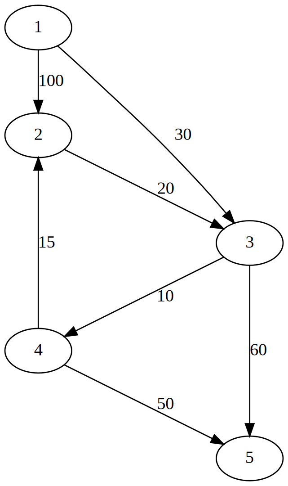
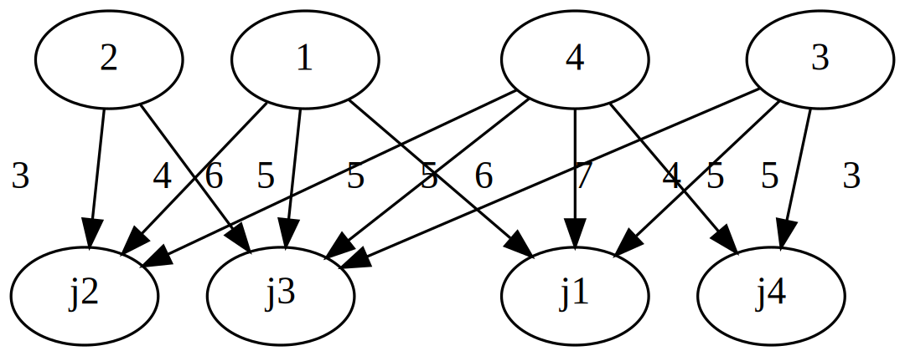
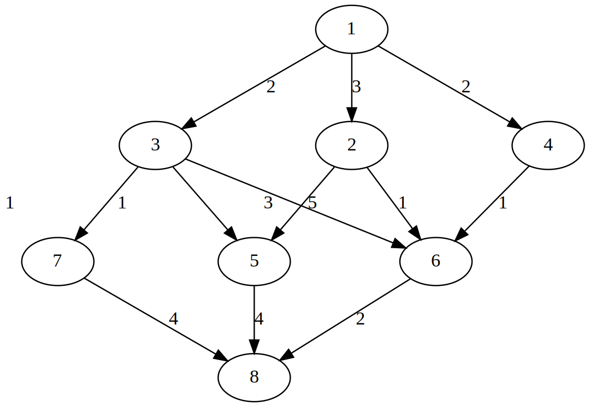

Network Flows
Originally Contributed by: Arpit Bhatia
In graph theory, a flow network (also known as a transportation network) is a directed graph where each edge has a capacity and each edge receives a flow. The amount of flow on an edge cannot exceed the capacity of the edge.
Often in operations research, a directed graph is called a network, the vertices are called nodes and the edges are called arcs.
A flow must satisfy the restriction that the amount of flow into a node equals the amount of flow out of it, unless it is a source, which has only outgoing flow, or sink, which has only incoming flow.
A network can be used to model traffic in a computer network, circulation with demands, fluids in pipes, currents in an electrical circuit, or anything similar in which something travels through a network of nodes.
using JuMP
import GLPK
import LinearAlgebraThe Shortest Path Problem
Suppose that each arc $(i, j)$ of a graph is assigned a scalar cost $a_{i,j}$, and suppose that we define the cost of a forward path to be the sum of the costs of its arcs.
Given a pair of nodes, the shortest path problem is to find a forward path that connects these nodes and has minimum cost.
\[\begin{aligned} \min && \sum_{\forall e(i,j) \in E} a_{i,j} \times x_{i,j} \\ s.t. && b(i) = \sum_j x_{ij} - \sum_k x_{ki} = \begin{cases} 1 &\mbox{if $i$ is the starting node,} \\ -1 &\mbox{if $i$ is the ending node,} \\ 0 &\mbox{otherwise.} \end{cases} \\ && x_{e} \in \{0,1\} && \forall e \in E \end{aligned}\]

G = [
0 100 30 0 0;
0 0 20 0 0;
0 0 0 10 60;
0 15 0 0 50;
0 0 0 0 0;
]
n = size(G)[1]
shortest_path = Model(GLPK.Optimizer)
@variable(shortest_path, x[1:n,1:n], Bin)5×5 Array{VariableRef,2}:
x[1,1] x[1,2] x[1,3] x[1,4] x[1,5]
x[2,1] x[2,2] x[2,3] x[2,4] x[2,5]
x[3,1] x[3,2] x[3,3] x[3,4] x[3,5]
x[4,1] x[4,2] x[4,3] x[4,4] x[4,5]
x[5,1] x[5,2] x[5,3] x[5,4] x[5,5]Arcs with zero cost are not a part of the path as they do no exist
@constraint(shortest_path, [i = 1:n, j = 1:n; G[i,j] == 0], x[i,j] == 0)JuMP.Containers.SparseAxisArray{ConstraintRef{Model,MathOptInterface.ConstraintIndex{MathOptInterface.ScalarAffineFunction{Float64},MathOptInterface.EqualTo{Float64}},ScalarShape},2,Tuple{Int64,Int64}} with 18 entries:
[1, 1] = x[1,1] = 0.0
[1, 4] = x[1,4] = 0.0
[1, 5] = x[1,5] = 0.0
[2, 1] = x[2,1] = 0.0
[2, 2] = x[2,2] = 0.0
[2, 4] = x[2,4] = 0.0
[2, 5] = x[2,5] = 0.0
⋮
[4, 1] = x[4,1] = 0.0
[4, 3] = x[4,3] = 0.0
[4, 4] = x[4,4] = 0.0
[5, 1] = x[5,1] = 0.0
[5, 2] = x[5,2] = 0.0
[5, 3] = x[5,3] = 0.0
[5, 4] = x[5,4] = 0.0
[5, 5] = x[5,5] = 0.0Flow conservation constraint
@constraint(shortest_path, [i = 1:n; i != 1 && i != 2], sum(x[i,:]) == sum(x[:,i]))JuMP.Containers.SparseAxisArray{ConstraintRef{Model,MathOptInterface.ConstraintIndex{MathOptInterface.ScalarAffineFunction{Float64},MathOptInterface.EqualTo{Float64}},ScalarShape},1,Tuple{Int64}} with 3 entries:
[3] = x[3,1] + x[3,2] - x[1,3] - x[2,3] - x[4,3] - x[5,3] + x[3,4] + x[3,5] = 0.0
[4] = x[4,1] + x[4,2] + x[4,3] - x[1,4] - x[2,4] - x[3,4] - x[5,4] + x[4,5] = 0.0
[5] = x[5,1] + x[5,2] + x[5,3] + x[5,4] - x[1,5] - x[2,5] - x[3,5] - x[4,5] = 0.0Flow coming out of source = 1
@constraint(shortest_path, sum(x[1,:]) - sum(x[:,1]) == 1)\[ -x_{2,1} - x_{3,1} - x_{4,1} - x_{5,1} + x_{1,2} + x_{1,3} + x_{1,4} + x_{1,5} = 1.0 \]
Flowing coming out of destination = -1 i.e. Flow entering destination = 1
@constraint(shortest_path, sum(x[2,:]) - sum(x[:,2]) == -1)
@objective(shortest_path, Min, LinearAlgebra.dot(G, x))
optimize!(shortest_path)
objective_value(shortest_path)55.0value.(x)5×5 Array{Float64,2}:
0.0 0.0 1.0 0.0 0.0
0.0 0.0 0.0 0.0 0.0
0.0 0.0 0.0 1.0 0.0
0.0 1.0 0.0 0.0 0.0
0.0 0.0 0.0 0.0 0.0The Assignment Problem
Suppose that there are $n$ persons and $n$ objects that we have to match on a one-to-one basis. There is a benefit or value $a_{i,j}$ for matching person $i$ with object $j$, and we want to assign persons to objects so as to maximize the total benefit.
There is also a restriction that person $i$ can be assigned to object $j$ only if $(i, j)$ belongs to a given set of pairs $A$.
Mathematically, we want to find a set of person-object pairs $(1, j_{1}),..., (n, j_{n})$ from $A$ such that the objects $j_{1},...,j_{n}$ are all distinct, and the total benefit $\sum_{i=1}^{y} a_{ij_{i}}$ is maximized.
\[\begin{aligned} \max && \sum_{(i,j) \in A} a_{i,j} \times y_{i,j} \\ s.t. && \sum_{\{j|(i,j) \in A\}} y_{i,j} = 1 && \forall i = \{1,2....n\} \\ && \sum_{\{i|(i,j) \in A\}} y_{i,j} = 1 && \forall j = \{1,2....n\} \\ && y_{i,j} \in \{0,1\} && \forall (i,j) \in \{1,2...k\} \end{aligned}\]

G = [
6 4 5 0;
0 3 6 0;
5 0 4 3;
7 5 5 5;
]
n = size(G)[1]
assignment = Model(GLPK.Optimizer)
@variable(assignment, y[1:n,1:n], Bin)4×4 Array{VariableRef,2}:
y[1,1] y[1,2] y[1,3] y[1,4]
y[2,1] y[2,2] y[2,3] y[2,4]
y[3,1] y[3,2] y[3,3] y[3,4]
y[4,1] y[4,2] y[4,3] y[4,4]One person can only be assigned to one object
@constraint(assignment, [i = 1:n], sum(y[:,i]) == 1)4-element Array{ConstraintRef{Model,MathOptInterface.ConstraintIndex{MathOptInterface.ScalarAffineFunction{Float64},MathOptInterface.EqualTo{Float64}},ScalarShape},1}:
y[1,1] + y[2,1] + y[3,1] + y[4,1] = 1.0
y[1,2] + y[2,2] + y[3,2] + y[4,2] = 1.0
y[1,3] + y[2,3] + y[3,3] + y[4,3] = 1.0
y[1,4] + y[2,4] + y[3,4] + y[4,4] = 1.0One object can only be assigned to one person
@constraint(assignment, [j = 1:n], sum(y[j,:]) == 1)
@objective(assignment, Max, LinearAlgebra.dot(G, y))
optimize!(assignment)
objective_value(assignment)20.0value.(y)4×4 Array{Float64,2}:
0.0 1.0 0.0 0.0
0.0 0.0 1.0 0.0
1.0 0.0 0.0 0.0
0.0 0.0 0.0 1.0The Max-Flow Problem
In the max-flow problem, we have a graph with two special nodes: the $source$, denoted by $s$, and the $sink$, denoted by $t$.
The objective is to move as much flow as possible from $s$ into $t$ while observing the capacity constraints.
\[\begin{aligned} \max && \sum_{v:(s,v) \in E} f(s,v) \\ s.t. && \sum_{u:(u,v) \in E} f(u,v) = \sum_{w:(v,w) \in E} f(v,w) && \forall v \in V - \{s,t\} \\ && f(u,v) \leq c(u,v) && \forall (u,v) \in E \\ && f(u,v) \geq 0 && \forall (u,v) \in E \end{aligned}\]

G = [
0 3 2 2 0 0 0 0;
0 0 0 0 5 1 0 0;
0 0 0 0 1 3 1 0;
0 0 0 0 0 1 0 0;
0 0 0 0 0 0 0 4;
0 0 0 0 0 0 0 2;
0 0 0 0 0 0 0 4;
0 0 0 0 0 0 0 0;
]
n = size(G)[1]
max_flow = Model(GLPK.Optimizer)
@variable(max_flow, f[1:n,1:n] >= 0)8×8 Array{VariableRef,2}:
f[1,1] f[1,2] f[1,3] f[1,4] f[1,5] f[1,6] f[1,7] f[1,8]
f[2,1] f[2,2] f[2,3] f[2,4] f[2,5] f[2,6] f[2,7] f[2,8]
f[3,1] f[3,2] f[3,3] f[3,4] f[3,5] f[3,6] f[3,7] f[3,8]
f[4,1] f[4,2] f[4,3] f[4,4] f[4,5] f[4,6] f[4,7] f[4,8]
f[5,1] f[5,2] f[5,3] f[5,4] f[5,5] f[5,6] f[5,7] f[5,8]
f[6,1] f[6,2] f[6,3] f[6,4] f[6,5] f[6,6] f[6,7] f[6,8]
f[7,1] f[7,2] f[7,3] f[7,4] f[7,5] f[7,6] f[7,7] f[7,8]
f[8,1] f[8,2] f[8,3] f[8,4] f[8,5] f[8,6] f[8,7] f[8,8]Capacity constraints
@constraint(max_flow, [i = 1:n, j = 1:n], f[i,j] <= G[i,j])8×8 Array{ConstraintRef{Model,MathOptInterface.ConstraintIndex{MathOptInterface.ScalarAffineFunction{Float64},MathOptInterface.LessThan{Float64}},ScalarShape},2}:
f[1,1] ≤ 0.0 f[1,2] ≤ 3.0 f[1,3] ≤ 2.0 f[1,4] ≤ 2.0 f[1,5] ≤ 0.0 f[1,6] ≤ 0.0 f[1,7] ≤ 0.0 f[1,8] ≤ 0.0
f[2,1] ≤ 0.0 f[2,2] ≤ 0.0 f[2,3] ≤ 0.0 f[2,4] ≤ 0.0 f[2,5] ≤ 5.0 f[2,6] ≤ 1.0 f[2,7] ≤ 0.0 f[2,8] ≤ 0.0
f[3,1] ≤ 0.0 f[3,2] ≤ 0.0 f[3,3] ≤ 0.0 f[3,4] ≤ 0.0 f[3,5] ≤ 1.0 f[3,6] ≤ 3.0 f[3,7] ≤ 1.0 f[3,8] ≤ 0.0
f[4,1] ≤ 0.0 f[4,2] ≤ 0.0 f[4,3] ≤ 0.0 f[4,4] ≤ 0.0 f[4,5] ≤ 0.0 f[4,6] ≤ 1.0 f[4,7] ≤ 0.0 f[4,8] ≤ 0.0
f[5,1] ≤ 0.0 f[5,2] ≤ 0.0 f[5,3] ≤ 0.0 f[5,4] ≤ 0.0 f[5,5] ≤ 0.0 f[5,6] ≤ 0.0 f[5,7] ≤ 0.0 f[5,8] ≤ 4.0
f[6,1] ≤ 0.0 f[6,2] ≤ 0.0 f[6,3] ≤ 0.0 f[6,4] ≤ 0.0 f[6,5] ≤ 0.0 f[6,6] ≤ 0.0 f[6,7] ≤ 0.0 f[6,8] ≤ 2.0
f[7,1] ≤ 0.0 f[7,2] ≤ 0.0 f[7,3] ≤ 0.0 f[7,4] ≤ 0.0 f[7,5] ≤ 0.0 f[7,6] ≤ 0.0 f[7,7] ≤ 0.0 f[7,8] ≤ 4.0
f[8,1] ≤ 0.0 f[8,2] ≤ 0.0 f[8,3] ≤ 0.0 f[8,4] ≤ 0.0 f[8,5] ≤ 0.0 f[8,6] ≤ 0.0 f[8,7] ≤ 0.0 f[8,8] ≤ 0.0Flow conservation constraints
@constraint(max_flow, [i = 1:n; i != 1 && i != 8], sum(f[i,:]) == sum(f[:,i]))
@objective(max_flow, Max, sum(f[1, :]))
optimize!(max_flow)
objective_value(max_flow)6.0value.(f)8×8 Array{Float64,2}:
0.0 3.0 2.0 1.0 0.0 0.0 0.0 0.0
0.0 0.0 0.0 0.0 3.0 0.0 0.0 0.0
0.0 0.0 0.0 0.0 1.0 1.0 0.0 0.0
0.0 0.0 0.0 0.0 0.0 1.0 0.0 0.0
0.0 0.0 0.0 0.0 0.0 0.0 0.0 4.0
0.0 0.0 0.0 0.0 0.0 0.0 0.0 2.0
0.0 0.0 0.0 0.0 0.0 0.0 0.0 0.0
0.0 0.0 0.0 0.0 0.0 0.0 0.0 0.0This page was generated using Literate.jl.